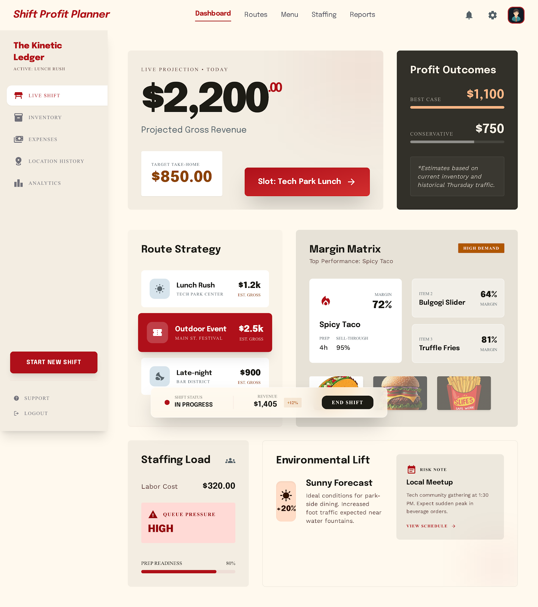

PF SAFE DEMO · 2026-03-27-p001
Food Truck Shift Profit Planner
A shift-planning dashboard that helps food-truck operators balance prep, staffing, and menu mix before profit leaks during service.
ingest status
Imported from Stitch exportThe approved Stitch screen is now stored locally and wrapped in a PF-safe viewer for reliable preview, build, and hosting.
- Source preserved as local artifact
- Public demo path avoids remote CDN dependency
- Preview uses the shipped Stitch screen
